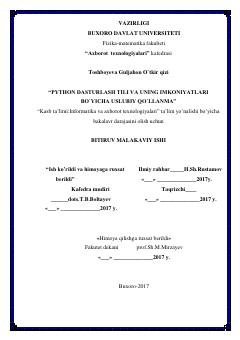

PDPython dasturlash tili va uning imkoniyatlarini o'rganish uchun amaliy uslubiy qo'llanma.
Ushbu uslubiy qo'llanmada Python dasturlash tilining yaratilish tarixi, sintaksisi, asosiy operatorlari va amaliy imkoniyatlari batafsil yoritilgan. Shuningdek, funksiyalar, fayllar, ma'lumotlar tuzilmasi va turli modullar bilan ishlash masalalari ko'rib chiqilgan.